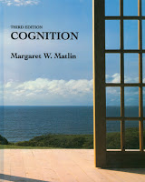

|
COGNITION
COGNITIVE ARCHITECTURE (2018)
- Overview
- Cognitive Architecture Models
COGNITION - wlu
COGNITION SUMMARY NOTES
COGNITION STUDY CUE CARDS (text)
|
|
COGNITION NOTES
|
- Cognition, 3rd Ed.
Margaret W. Matlin
1994 (orig 1983) Harcourt Brace Publishers
by Holt, Rinehart & Winston Inc.
- not in library
- CONTENTS Cognition 3rd ed. Matlin
- Contains contents and theories
around which Cognition studies organized
|

|
PS100 - Gleitman textbook
- ch7) Memory | Review ch7 Memeory
- Studying Memory
- Encoding
- Stage Theory of memory | a changed emphasis: active memory and organization
- Retrieval
- relation between original encoding and retrieval | elaborative rehearsal | memory search | implicit memory | retrieval from active memory
- Conceptual Frameworks and Remembering
- memory distortions | limits of memory | limits of distortion
- Varieties of Long-term Memory
- generic memory | visual memory
- Forgetting
- theories of forgetting | when forgetting seems not to occur
- Disordered Memories
- anterograde amnesia | retrograde amnesia | explicit and implicit memory revisited
- Taking Stock
- ch8) Thinking | Review ch8 Thinking
- Components of Thought
- mental imagery | abstract elements
- Problem Solving
- hierarchical organization and chunking obstacles to problem solving | overcoming obstacles to solution | restructuring
- Artificial Intelligence: Problem Solving by Computer
- algorithms and heuristics | some limitation of artificial intelligence
- Special Thinking
- spacial problem solving and imagery | is spacial knowledge visual?
- Reasoning and Decision Making
- deductive reasoning | inductive reasoning | decision making | are people really irrational?
- A backward Look a Perception, Memory, and Thinking
- ch9) Language | Review ch9 Language
- Major Properties of Human Language
- language is creative | language is structured | language is meaningful | language is referential | language is interpersonal
- Structure of Language
- phonemes | morphemes and words | phrases and sentences
- Linguistic Hierarchy and Meaning
- meaning of words | organizing words into meaningful sentences
- Comprehension
- sentence analyzing machinery | interaction of syntax and semantics
- Growth of Language in the Child
- problem of language learning | is language learning the acquisition of a skill?
- Language Development
- social origins of speech production | discovering the forms of language | the one-word speaker | the two-word (telegraphic) speaker | later stages of language learning: syntax | further stages of language learning: word meaning
- Language Learning in Changed Environments
- wild children | isolated children | language without sound | language without a model | children deprived of access to some of the meanings | case of Helen Keller
- Language Learning with Changed Endowments
- critical period hypothesis | language in nonhumans
- Language and Its Learning
back home
|